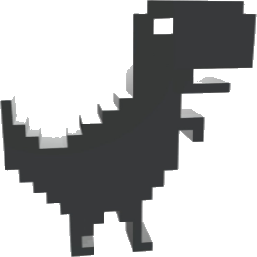

CortechOS™
Because even your thoughts deserve a premium subscription.

Processor Model:
Cortech-C1™ Neural Die
Installation Time:
15-Min Outpatient Procedure
Sleep Dependency:
Zero (Work 24/7 Enabled)
HOTLINE: 1-800-MY-BRAIN
PORTAL: CortechOS.com
2 SLOTS REMAINING TODAY